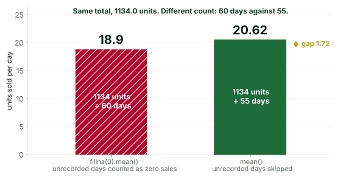
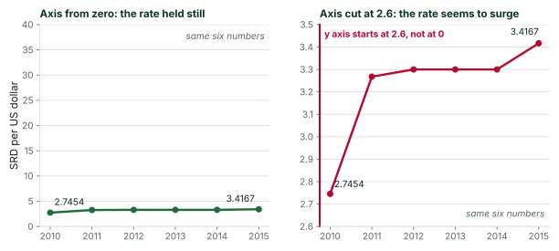
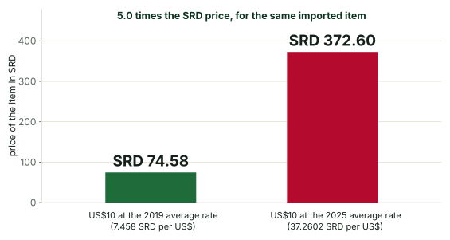
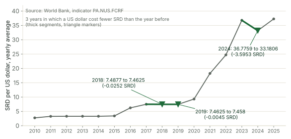

The goal of the week
Het doel van de week
By Friday, every student can run a notebook, get working code from an AI assistant, read that code line by line before running it, describe a table before using it, and distrust an answer that has not been checked. The habit of checking matters more this week than any single skill.
Op vrijdag kan elke student een notebook draaien, werkende code krijgen van een AI-assistent, die code regel voor regel lezen voordat hij die uitvoert, een tabel beschrijven voordat hij die gebruikt, en een antwoord wantrouwen dat niet gecontroleerd is. De gewoonte om te controleren is deze week belangrijker dan welke losse vaardigheid ook.
The skills track runs on a made-up shop with sixty days of sales and five days nobody recorded. The project runs on the World Bank's yearly exchange rate for Suriname. Keep the two apart in the workshops. The shop teaches the skill; the studio applies it to Suriname.
Het vaardighedenspoor draait op een verzonnen winkel met zestig dagen verkoop en vijf dagen die niemand heeft opgeschreven. Het project draait op de jaarlijkse wisselkoers van Suriname volgens de Wereldbank. Houd die twee in de workshops gescheiden: de winkel leert de vaardigheid, en de studio past haar toe op Suriname.
Before Monday
Vóór maandag
- Form the teams. Thirty students make six teams of four and two teams of three. In a team of three, the presenter also checks the data.Vorm de teams. Dertig studenten vormen zes teams van vier en twee teams van drie. In een team van drie controleert de presentator ook de data.
- Publish the role rotation for the year, so every student holds every role.Publiceer het rooster van de rollen voor het hele jaar, zodat elke student elke rol vervult.
- Run both notebooks yourself from a fresh Colab session, and read the solution notebook you received separately. Write down the shop's numbers that the workshops quote: sixty rows, five missing days and the two averages of the AI case.Draai beide notebooks zelf in een nieuwe Colab-sessie, en lees het oplossingsnotebook dat je apart hebt ontvangen. Schrijf de getallen van de winkel op die de workshops aanhalen: zestig rijen, vijf ontbrekende dagen en de twee gemiddelden uit de AI-casus.
- Make sure every student has a Google account that opens Colab, and an account with an AI assistant. Test both on the studio's network on Friday of the week before.Zorg dat elke student een Google-account heeft waarmee Colab opent, en een account bij een AI-assistent. Test beide op het netwerk van de studio op de vrijdag ervoor.
- Print the four exercise sheets and the Friday scoring sheet, one per pair or per team. Students work from paper in the exercises so their screens stay on the notebook.Druk de vier oefenbladen en het scoreblad van vrijdag af, één per tweetal of per team. Studenten werken bij de oefeningen van papier, zodat hun scherm bij het notebook blijft.
- Prepare the AI log template, which has one row per claim and the columns date, who asked, the exact request, the AI's claim, the check that was run, and the verdict.Maak het sjabloon voor het AI-logboek: één rij per bewering, met de kolommen datum, wie vroeg, het exacte verzoek, de bewering van de AI, de uitgevoerde controle en het oordeel.
The four workshops
De vier workshops
Each workshop lasts two hours and has three parts: a slide script you talk through, a live demonstration you type in front of the room, and an exercise sheet the room works in pairs. The minute plan at the top of each workshop fits the three parts into the two hours. Keep the demonstration live and keep your mistakes in it; a fellow who mistypes and reads the error teaches more than a fellow who pastes.
Elke workshop duurt twee uur en bestaat uit drie delen: een diascript dat je doorspreekt, een live demonstratie die je voor de zaal typt, en een oefenblad dat de zaal in tweetallen maakt. Het minutenplan bovenaan elke workshop past de drie delen in de twee uur. Houd de demonstratie live en laat je fouten erin staan; een fellow die zich vertypt en de foutmelding leest, leert de zaal meer dan een fellow die plakt.
Monday: the AI partner and Colab (2 hours)Maandag: de AI-partner en Colab (2 uur)
The room leaves this workshop able to open Colab, run cells in order, explain what a restart does, and write a request to an AI assistant that names the data, the shape of the answer and the unit. Nobody writes code from scratch today.
De zaal verlaat deze workshop in staat om Colab te openen, cellen op volgorde uit te voeren, uit te leggen wat een herstart doet, en een verzoek aan een AI-assistent te schrijven dat de data, de vorm van het antwoord en de eenheid noemt. Niemand schrijft vandaag code vanaf nul.
- 15 minutes. The slides cover what a notebook is, what Colab is and what a request to an assistant contains.15 minuten. De dia's: wat een notebook is, wat Colab is, wat een verzoek aan een assistent bevat.
- 35 minutes. The live demonstration shows a fresh notebook, cells run in and out of order, a restart, and one request to the assistant read aloud line by line before it runs.35 minuten. De live demonstratie: een nieuw notebook, cellen op en buiten volgorde, een herstart, en één verzoek aan de assistent dat regel voor regel wordt voorgelezen voordat het draait.
- 50 minutes. The exercise sheet in pairs. Walk the room; sit with any pair that has not run a cell after ten minutes.50 minuten. Het oefenblad in tweetallen. Loop door de zaal; ga zitten bij elk tweetal dat na tien minuten nog geen cel heeft uitgevoerd.
- 20 minutes. Each pair reports one thing the assistant got wrong or left unclear. Write the list on the board and keep it; Friday's review returns to it.20 minuten. Elk tweetal meldt één ding dat de assistent fout deed of onduidelijk liet. Schrijf de lijst op het bord en bewaar hem; de bespreking van vrijdag komt erop terug.
Slide scriptDiascript
Live demonstration scriptScript voor de live demonstratie
Say. Open colab.research.google.com in the browser, sign in, and choose a new notebook. Point at the empty cell, the play button beside it, and the menu bar. Say that this is the whole tool: cells, a play button and a menu.
Zeg. Open colab.research.google.com in de browser, log in en kies een nieuw notebook. Wijs de lege cel aan, de afspeelknop ernaast en de menubalk. Zeg dat dit het hele gereedschap is: cellen, een afspeelknop en een menu.
Type and run.
Typ en voer uit.
print("Hello from BiGi Data")
print(60 * 24, "minutes in a day")print("Hallo van BiGi Data")
print(60 * 24, "minuten in een dag")Say. Before you press play, ask the room what the second line will print. Someone says one thousand four hundred forty. Press play. The output appears under the cell: the greeting, then 1440 minutes in a day. Say that predicting before running is the habit of the week, and that they just did it.
Zeg. Vraag de zaal, voordat je op afspelen drukt, wat de tweede regel zal afdrukken. Iemand zegt veertienhonderdveertig. Druk op afspelen. De uitvoer verschijnt onder de cel: de groet, dan 1440 minuten in een dag. Zeg dat voorspellen voordat je uitvoert de gewoonte van de week is, en dat ze het net hebben gedaan.
Type and run.
Typ en voer uit.
price = 12.5
units = 4price = 12.5
units = 4Say. Run it. Nothing appears, which is right, because the cell made two values and printed nothing. Say that the values are now alive in the notebook.
Zeg. Voer hem uit. Er verschijnt niets, en dat is goed: de cel heeft twee waarden gemaakt en niets afgedrukt. Zeg dat de waarden nu in het notebook leven.
Type and run.
Typ en voer uit.
price * unitsprice * unitsSay. Ask for the prediction, then run it: 50.0. Now the trap. Go back to the first cell, change the price to 10, and do not run it. Run the second cell again. It still prints 50.0, because the notebook remembers the old price. The screen shows one number and the code says another. Say that this is how a notebook lies to you, and that the cure is Runtime, Restart session and run all. Do it, and show 40.0.
Zeg. Vraag om de voorspelling en voer hem dan uit: 50.0. Nu de valkuil. Ga terug naar de eerste cel, verander de prijs in 10 en voer hem niet uit. Voer de tweede cel opnieuw uit. Hij drukt nog steeds 50.0 af, omdat het notebook de oude prijs onthoudt. Het scherm toont één getal en de code zegt een ander. Zeg dat een notebook zo tegen je liegt, en dat het geneesmiddel is: Runtime, Restart session and run all. Doe het, en laat 40.0 zien.
Type and run.
Typ en voer uit.
import pandas as pd
print(pd.__version__)import pandas as pd
print(pd.__version__)Say. Say that pandas is the table library the whole year uses, that Colab has it installed already, and that the printed version number is why everyone in the room will get the same results from the same code.
Zeg. Zeg dat pandas de tabelbibliotheek is die het hele jaar gebruikt wordt, dat Colab haar al geïnstalleerd heeft, en dat het afgedrukte versienummer de reden is dat iedereen in de zaal dezelfde resultaten krijgt van dezelfde code.
Ask the assistant. Make a pandas table called fruit with two columns, name and price_srd, for five fruits sold in a market. Prices are in Surinamese dollars. Show the table.
Vraag de assistent. Make a pandas table called fruit with two columns, name and price_srd, for five fruits sold in a market. Prices are in Surinamese dollars. Show the table. (Typ het verzoek in het Engels; de meeste assistenten geven dan de schoonste code.)
Say. Paste the code into a new cell and do not run it. Read it aloud, line by line, with the room: the import line, the line that makes the dictionary or list, the line that makes the DataFrame, and the final line that shows it. For each line, ask what it produces. Only then press play. Whatever prices the assistant invented, say that they are invented, that a table from an assistant is never data, and that the week's real data comes from a file with a named source.
Zeg. Plak de code in een nieuwe cel en voer hem niet uit. Lees hem hardop, regel voor regel, met de zaal: de importregel, de regel die de dictionary of lijst maakt, de regel die de DataFrame maakt, en de laatste regel die hem toont. Vraag bij elke regel wat die oplevert. Druk pas dan op afspelen. Welke prijzen de assistent ook heeft verzonnen, zeg dat ze verzonnen zijn, dat een tabel van een assistent nooit data is, en dat de echte data van deze week uit een bestand met een genoemde bron komt.
Say. Close by asking the assistant a second time with the vague request from the slides, make me a table of fruit, and show the room how different the answer is. Then hand out the exercise sheet.
Zeg. Sluit af door de assistent nog eens te vragen met het vage verzoek van de dia's, maak een tabel met fruit, en laat de zaal zien hoe anders het antwoord is. Deel dan het oefenblad uit.
Exercise sheetOefenblad
Work in pairs on one laptop. One person types, the other reads every line aloud before it runs; swap after task 3. Write your answers on this sheet, not in the notebook.
Werk in tweetallen op één laptop. De een typt, de ander leest elke regel hardop voordat die draait; wissel na opdracht 3. Schrijf je antwoorden op dit blad, niet in het notebook.
- Open Colab and make a new notebook. In the first cell, print both of your names. Run it.Open Colab en maak een nieuw notebook. Druk in de eerste cel jullie beide namen af. Voer hem uit.
- Write down what
print(7 * 24, "hours in a week")will print. Then run it. Were you right?Schrijf op watprint(7 * 24, "hours in a week")zal afdrukken. Voer het dan uit. Hadden jullie gelijk? - In one cell, set
price = 12.5andunits = 4. In the cell below, runprice * units. Write the result down. Now changeunitsto 6 without running that cell, and run the second cell again. Write down what you see and why.Zet in één celprice = 12.5enunits = 4. Voer in de cel eronderprice * unitsuit. Schrijf het resultaat op. Verander nuunitsin 6 zonder die cel uit te voeren, en voer de tweede cel opnieuw uit. Schrijf op wat je ziet en waarom. - Restart the session from the Runtime menu. Run only the second cell. Write down the name of the error, and in one sentence what it tells you.Herstart de sessie via het menu Runtime. Voer alleen de tweede cel uit. Schrijf de naam van de fout op, en in één zin wat die je vertelt.
- Write three requests to the assistant for the same thing: a table of five vegetables with their price per kilogram in SRD. Make the first vague, the second better and the third exact, naming the data, the shape and the unit. Send only the third.Schrijf drie verzoeken aan de assistent voor hetzelfde ding: een tabel met vijf groenten en hun prijs per kilo in SRD. Maak het eerste vaag, het tweede beter en het derde exact, met de data, de vorm en de eenheid. Verstuur alleen het derde.
- Before running the code that comes back, read it aloud line by line and write one line on this sheet per line of code, saying what it does. Then run it.Lees de code die terugkomt hardop, regel voor regel, voordat je hem uitvoert, en schrijf per regel code één regel op dit blad over wat die doet. Voer hem dan uit.
- Write down one thing the assistant did that you did not ask for, or one thing in its code you could not explain. Bring it to the report at the end.Schrijf één ding op dat de assistent deed zonder dat je het vroeg, of één ding in de code dat je niet kon verklaren. Neem het mee naar de rapportage aan het eind.
Answers for the fellowAntwoorden voor de fellow
Task 2 prints 168 hours in a week; seven days of twenty-four hours is a definition, so a pair that writes anything else has misread the asterisk. Task 3 prints 50.0 both times, because the second cell uses the value the notebook remembers, and the changed 6 never ran. Task 4 raises a NameError saying that price is not defined: a restart forgets every value, and the cell that defined it has not run yet. Tasks 5 to 7 have no single answer; a strong third request looks like the one in the demonstration, and a strong line-by-line reading names the import, the data, the table and the display. Common wrong notes to catch while walking: a pair that thinks the restart deleted its code (the cells are still there; only the values are gone), and a pair that pastes the assistant's explanation into the cell along with its code and gets a SyntaxError.
Opdracht 2 drukt 168 hours in a week af; zeven dagen van vierentwintig uur is een definitie, dus een tweetal dat iets anders opschrijft, heeft het sterretje verkeerd gelezen. Opdracht 3 drukt beide keren 50.0 af, omdat de tweede cel de waarde gebruikt die het notebook onthoudt, en de gewijzigde 6 nooit is uitgevoerd. Opdracht 4 geeft een NameError die zegt dat price niet gedefinieerd is: een herstart vergeet elke waarde, en de cel die haar definieerde is nog niet gedraaid. Opdrachten 5 tot 7 hebben geen enkel juist antwoord; een sterk derde verzoek lijkt op dat uit de demonstratie, en een sterke regel-voor-regel-lezing noemt de import, de data, de tabel en de weergave. Veelgemaakte fouten om onderweg op te vangen: een tweetal dat denkt dat de herstart de code heeft gewist (de cellen staan er nog; alleen de waarden zijn weg), en een tweetal dat de uitleg van de assistent samen met de code in de cel plakt en een SyntaxError krijgt.
Tuesday: reading code you did not write (2 hours)Dinsdag: code lezen die je niet zelf schreef (2 uur)
The room leaves this workshop with one habit: predict the output, write the prediction down, then run. A student who predicts notices when the output is strange, and a student who notices is the only kind who catches an assistant. Every piece of code today is the shop's, so the numbers match the skills notebook.
De zaal verlaat deze workshop met één gewoonte: voorspel de uitvoer, schrijf de voorspelling op, voer dan uit. Een student die voorspelt, merkt het wanneer de uitvoer vreemd is, en alleen een student die het merkt, betrapt een assistent. Alle code van vandaag is die van de winkel, zodat de getallen overeenkomen met het vaardighedennotebook.
- 15 minutes. The slides give the three questions you ask of every line, and say why a prediction written down beats a prediction thought.15 minuten. De dia's: de drie vragen die je bij elke regel stelt, en waarom een opgeschreven voorspelling beter is dan een gedachte voorspelling.
- 35 minutes. The live demonstration loads the shop table, then runs three pieces of AI-written code, each predicted by the room before it runs.35 minuten. De live demonstratie: de winkeltabel geladen, dan drie stukken AI-code, elk door de zaal voorspeld voordat het draait.
- 50 minutes. The exercise sheet, in pairs, gives seven pieces to predict, then run, then explain.50 minuten. Het oefenblad in tweetallen: zeven stukken om te voorspellen, dan uit te voeren, dan elk verschil te verklaren.
- 20 minutes. Pairs report the piece whose output surprised them most and what the surprise taught them. End by naming tomorrow's topic: the four questions you ask a table before calculating.20 minuten. Tweetallen melden het stuk waarvan de uitvoer hen het meest verraste en wat die verrassing hun leerde. Sluit af met het onderwerp van morgen: de vier vragen die je een tabel stelt voordat je rekent.
Slide scriptDiascript
Live demonstration scriptScript voor de live demonstratie
Say. Open a fresh notebook and paste the shop's loading cell from the skills notebook. Say that the room has seen this cell, that the seed 7 makes the numbers the same on every laptop, and that the line with np.nan removes five days on purpose.
Zeg. Open een nieuw notebook en plak de laadcel van de winkel uit het vaardighedennotebook. Zeg dat de zaal deze cel kent, dat de seed 7 de getallen op elke laptop gelijk maakt, en dat de regel met np.nan opzettelijk vijf dagen weghaalt.
Type and run.
Typ en voer uit.
import numpy as np
import pandas as pd
rng = np.random.default_rng(7)
days = pd.date_range("2026-01-01", periods=60, freq="D")
units = rng.poisson(20, size=60).astype(float)
units[[5, 17, 18, 40, 52]] = np.nan # five days where nobody wrote the sales down
shop = pd.DataFrame({"date": days, "units_sold": units, "price": 12.5})
shop.to_csv("shop_sales.csv", index=False)
sales = pd.read_csv("shop_sales.csv", parse_dates=["date"])
sales.head()import numpy as np
import pandas as pd
rng = np.random.default_rng(7)
days = pd.date_range("2026-01-01", periods=60, freq="D")
units = rng.poisson(20, size=60).astype(float)
units[[5, 17, 18, 40, 52]] = np.nan # vijf dagen waarop niemand de verkoop opschreef
shop = pd.DataFrame({"date": days, "units_sold": units, "price": 12.5})
shop.to_csv("shop_sales.csv", index=False)
sales = pd.read_csv("shop_sales.csv", parse_dates=["date"])
sales.head()Say. Run it. The first five rows appear, the first of January to the fifth, with their units sold and the price of twelve and a half. Now say that an assistant wrote the next three cells, and that the room predicts each one before you press play.
Zeg. Voer hem uit. De eerste vijf rijen verschijnen, één tot vijf januari, met de verkochte stuks en de prijs van twaalf en een half. Zeg nu dat een assistent de volgende drie cellen heeft geschreven, en dat de zaal elke cel voorspelt voordat je op afspelen drukt.
Type and run.
Typ en voer uit.
# Written by an AI assistant
print("rows and columns:", sales.shape)
print(len(sales))# Geschreven door een AI-assistent
print("rijen en kolommen:", sales.shape)
print(len(sales))Say. Walk the room through the three questions on the first print: the variable is sales, the method is shape, the result is a pair. Collect predictions. Run it: rows and columns: (60, 3), then 60. Say that shape gives rows first and columns second, and that len gives the rows alone.
Zeg. Loop met de zaal de drie vragen door bij de eerste print: de variabele is sales, de methode is shape, het resultaat is een paar. Verzamel voorspellingen. Voer uit: rows and columns: (60, 3), dan 60. Zeg dat shape eerst de rijen en dan de kolommen geeft, en dat len alleen de rijen geeft.
Type and run.
Typ en voer uit.
# Written by an AI assistant
print("Days the AI's average used:", len(sales))
print("Days the recorded average used:", sales["units_sold"].count())# Geschreven door een AI-assistent
print("Dagen in het gemiddelde van de AI:", len(sales))
print("Dagen in het gemiddelde van de opgeschreven dagen:", sales["units_sold"].count())Say. Ask for predictions of both numbers. Most of the room says 60 and 60. Run it: 60, then 55. Ask why. Someone remembers the five missing days. Say that count skips a missing value and len does not, and that these two lines are the check that catches tomorrow's wrong answer.
Zeg. Vraag om voorspellingen van beide getallen. Het grootste deel van de zaal zegt 60 en 60. Voer uit: 60, dan 55. Vraag waarom. Iemand herinnert zich de vijf ontbrekende dagen. Zeg dat count een ontbrekende waarde overslaat en len niet, en dat deze twee regels de controle zijn die het foute antwoord van morgen betrapt.
Type and run.
Typ en voer uit.
# Written by an AI assistant
print("Units recorded in total:", sales["units_sold"].sum())
print("Days with no record:", sales.loc[sales["units_sold"].isna(), "date"].dt.strftime("%Y-%m-%d").tolist())# Geschreven door een AI-assistent
print("Opgeschreven stuks in totaal:", sales["units_sold"].sum())
print("Dagen zonder notitie:", sales.loc[sales["units_sold"].isna(), "date"].dt.strftime("%Y-%m-%d").tolist())Say. Predictions first: a number for the total, and a list of five dates. Run it. The total is 1134.0 units. The five dates follow: the sixth of January, the eighteenth and nineteenth of January, the tenth of February and the twenty-second of February. Read the second line with the room from left to right: sales, the rows where units_sold is missing, their date column, formatted as text, made into a list. Say that a line of five steps is still one question asked five times: what kind of thing is this now?
Zeg. Eerst de voorspellingen: een getal voor het totaal, en een lijst van vijf datums. Voer uit: 1134.0 stuks in totaal, en de vijf datums, zes januari, achttien en negentien januari, tien februari en tweeëntwintig februari. Lees de tweede regel met de zaal van links naar rechts: sales, de rijen waar units_sold ontbreekt, hun kolom date, als tekst opgemaakt, tot een lijst gemaakt. Zeg dat een regel van vijf stappen nog steeds één vraag is die vijf keer wordt gesteld: wat voor ding is dit nu?
Ask the assistant. Write code that prints the number of rows and the number of columns of the table sales on two separate lines, with a label before each number.
Vraag de assistent. Write code that prints the number of rows and the number of columns of the table sales on two separate lines, with a label before each number.
Say. Paste the code and read it with the room before running. Predict: 60 and 3. Whatever the assistant wrote, shape[0] and shape[1], or len and len of columns, say that two different pieces of code gave the same answer. A check is exactly that, a second route to the same number.
Zeg. Plak de code en lees hem met de zaal voordat je uitvoert. Voorspel: 60 en 3. Wat de assistent ook schreef, shape[0] en shape[1], of len en len van de kolommen, zeg dat twee verschillende stukken code hetzelfde antwoord gaven, en dat dat een controle is: een tweede weg naar hetzelfde getal.
Exercise sheetOefenblad
Work in pairs. Paste the shop's loading cell first and run it. For each piece below, write your prediction on this sheet before you run the code, then write the output, then one sentence on any difference. Swap who types after piece 4.
Werk in tweetallen. Plak eerst de laadcel van de winkel en voer hem uit. Schrijf bij elk stuk hieronder je voorspelling op dit blad voordat je de code uitvoert, dan de uitvoer, dan één zin over elk verschil. Wissel na stuk 4 wie typt.
sales.head(3). How many rows will appear, and what will the first date be?sales.head(3). Hoeveel rijen verschijnen er, en wat wordt de eerste datum?sales["price"].mean(). Think about how the price column was made before you predict.sales["price"].mean(). Denk aan hoe de kolom price is gemaakt voordat je voorspelt.sales["units_sold"].isna().sum(). What kind of thing isisna(), and what does summing it count?sales["units_sold"].isna().sum(). Wat voor ding isisna(), en wat telt de som ervan?sales.loc[sales["units_sold"].isna(), "date"]. How many dates, and in which two months?sales.loc[sales["units_sold"].isna(), "date"]. Hoeveel datums, en in welke twee maanden?sales["units_sold"].count() + sales["units_sold"].isna().sum(). Predict the number and say what it must equal.sales["units_sold"].count() + sales["units_sold"].isna().sum(). Voorspel het getal en zeg waaraan het gelijk moet zijn.sales["units_sold"].sum(). Then answer without code how many days contributed to that sum.sales["units_sold"].sum(). Beantwoord daarna zonder code: hoeveel dagen hebben aan die som bijgedragen?- Ask the assistant for code that prints the date of the last row in the table. Read it line by line, predict the date, then run it.Vraag de assistent om code die de datum van de laatste rij in de tabel afdrukt. Lees die regel voor regel, voorspel de datum, en voer dan uit.
Answers for the fellowAntwoorden voor de fellow
Piece 1 shows three rows starting 2026-01-01, with 24, 17 and 24 units sold. Piece 2 gives 12.5, because the loading cell sets every row's price to 12.5 and the mean of a constant column is that constant. Piece 3 gives 5: isna() is a column of true and false, and summing it counts the trues. Piece 4 lists five dates, three in January and two in February, the same list the demonstration printed. Piece 5 gives 60, the number of rows, because every row is either counted or missing. Piece 6 gives 1134.0, and the sum used 55 days, because sum skips missing values the way count does. Piece 7 ends on 2026-03-01: sixty days from the first of January reach the first of March in a non-leap year, and a pair that predicted the end of February has counted January or February wrong, which is a useful mistake to discuss in the report.
Stuk 1 toont drie rijen vanaf 2026-01-01, met 24, 17 en 24 verkochte stuks. Stuk 2 geeft 12.5, omdat de laadcel elke rij de prijs 12.5 geeft en het gemiddelde van een constante kolom die constante is. Stuk 3 geeft 5: isna() is een kolom met waar en onwaar, en de som telt de waren. Stuk 4 geeft vijf datums, drie in januari en twee in februari, dezelfde lijst die de demonstratie afdrukte. Stuk 5 geeft 60, het aantal rijen, omdat elke rij óf geteld óf ontbrekend is. Stuk 6 geeft 1134.0, en de som gebruikte 55 dagen, omdat sum ontbrekende waarden overslaat zoals count dat doet. Stuk 7 eindigt op 2026-03-01: zestig dagen vanaf één januari komen in een niet-schrikkeljaar uit op één maart, en een tweetal dat eind februari voorspelde, heeft januari of februari verkeerd geteld, een nuttige fout om in de rapportage te bespreken.
Wednesday: describe before you calculate (2 hours)Woensdag: beschrijf voordat je rekent (2 uur)
The room leaves this workshop with the four questions as a reflex: how many rows, which columns, what type, how many missing. Most of the time goes to missing values and their disguises. The workshop ends by replaying the shop case in which an assistant's clean-running code gave the wrong average.
De zaal verlaat deze workshop met de vier vragen als reflex: hoeveel rijen, welke kolommen, welk type, hoeveel ontbrekend. De meeste tijd gaat naar ontbrekende waarden en hun vermommingen, en de workshop eindigt met het opnieuw afspelen van de winkelcasus waarin de foutloos draaiende code van een assistent het verkeerde gemiddelde gaf.
- 15 minutes. The slides give the four questions and the three disguises of a missing value, and say why zero is a lie.15 minuten. De dia's: de vier vragen, de drie vermommingen van een ontbrekende waarde, en waarom nul een leugen is.
- 40 minutes. The live demonstration opens a second shop whose file hides its gaps behind the words not counted, then replays the AI case on the first shop.40 minuten. De live demonstratie: een tweede winkel waarvan het bestand zijn gaten verbergt achter de woorden not counted, en daarna de herhaling van de AI-casus op de eerste winkel.
- 45 minutes. The exercise sheet, in pairs, asks the four questions of the second shop, a data dictionary, and the check that catches the wrong average.45 minuten. Het oefenblad in tweetallen: de vier vragen op de tweede winkel, een datawoordenboek, en de controle die het foute gemiddelde betrapt.
- 20 minutes. Pairs read their data dictionaries to each other and report the disguise that fooled them longest. Close by saying that the project's table gets the same four questions on Monday's checklist.20 minuten. Tweetallen lezen elkaar hun datawoordenboek voor en melden de vermomming die hen het langst voor de gek hield. Sluit af door te zeggen dat de tabel van het project dezelfde vier vragen krijgt op de checklist van maandag.
Slide scriptDiascript
Live demonstration scriptScript voor de live demonstratie
Say. Start from a notebook in which the shop's loading cell has run, so sales exists. Say that a second shop has sent six weeks of sales and that its clerk wrote the words not counted on the days without a count. Paste the cell and ask the room to predict the type of units_sold before you run it.
Zeg. Begin met een notebook waarin de laadcel van de winkel is uitgevoerd, zodat sales bestaat. Zeg dat een tweede winkel zes weken verkoop heeft gestuurd, en dat de bediende op de dagen zonder telling de woorden not counted schreef. Plak de cel en vraag de zaal het type van units_sold te voorspellen voordat je hem uitvoert.
Type and run.
Typ en voer uit.
import io
rng2 = np.random.default_rng(11)
dates2 = pd.date_range("2026-03-02", periods=42, freq="D")
expected_sales = np.where(dates2.dayofweek == 5, 34, 25) # Saturdays are busier
counts = rng2.poisson(expected_sales).astype(str).astype(object)
counts[[3, 9, 10, 25, 33]] = "not counted"
text = pd.DataFrame({"date": dates2, "units_sold": counts}).to_csv(index=False)
market = pd.read_csv(io.StringIO(text), parse_dates=["date"])
print(market.dtypes)
print(market.head(5))import io
rng2 = np.random.default_rng(11)
dates2 = pd.date_range("2026-03-02", periods=42, freq="D")
expected_sales = np.where(dates2.dayofweek == 5, 34, 25) # op zaterdag is het drukker
counts = rng2.poisson(expected_sales).astype(str).astype(object)
counts[[3, 9, 10, 25, 33]] = "not counted"
text = pd.DataFrame({"date": dates2, "units_sold": counts}).to_csv(index=False)
market = pd.read_csv(io.StringIO(text), parse_dates=["date"])
print(market.dtypes)
print(market.head(5))Say. Run it. The type of units_sold is object, which is pandas for text, and the fourth row, dated 2026-03-05, says not counted. Say that one word turned a column of numbers into a column of text, and that the line after it proves what that costs.
Zeg. Voer hem uit. Het type van units_sold is object, wat pandas zegt voor tekst, en de vierde rij, met datum 2026-03-05, zegt not counted. Zeg dat één woord een kolom getallen in een kolom tekst heeft veranderd, en dat de volgende regel bewijst wat dat kost.
Type and run.
Typ en voer uit.
market["units_sold"].mean()market["units_sold"].mean()Say. Predict first: a number, or an error? Run it. The error is long and red. Read its last line aloud; it says that text cannot be turned into a number. Say that this error is a friend, because it refused to average words. The disguise that averages without complaint, an impossible number, would not have stopped here.
Zeg. Eerst voorspellen: een getal, of een foutmelding? Voer uit. De foutmelding is lang en rood. Lees de laatste regel hardop; die zegt dat tekst niet in een getal kan worden omgezet. Zeg dat deze fout een vriend is, omdat ze weigerde woorden te middelen. De vermomming die zonder klagen meegemiddeld wordt, een onmogelijk getal, zou hier niet zijn gestopt.
Ask the assistant. The column units_sold in my pandas table market holds numbers as text, and some rows say not counted. Give me the average units sold per day over the days that were counted.
Vraag de assistent. The column units_sold in my pandas table market holds numbers as text, and some rows say not counted. Give me the average units sold per day over the days that were counted.
Say. Read what comes back with the room before running anything. Many assistants first suggest replacing not counted with 0 and then averaging. If yours does, do not run it; ask the room what that average would count, and let them say that it counts a forgotten day as a day with no sales. If yours suggests to_numeric with errors set to coerce, say that this is the right tool, and type the next cell yourself either way.
Zeg. Lees wat terugkomt met de zaal voordat je iets uitvoert. Veel assistenten stellen eerst voor om not counted door 0 te vervangen en dan te middelen. Als de jouwe dat doet, voer het niet uit; vraag de zaal wat dat gemiddelde zou tellen, en laat ze zeggen dat het een vergeten dag telt als een dag zonder verkoop. Als de jouwe to_numeric met errors op coerce voorstelt, zeg dan dat dit het juiste gereedschap is, en typ in beide gevallen de volgende cel zelf.
Type and run.
Typ en voer uit.
counted = pd.to_numeric(market["units_sold"], errors="coerce")
print(counted.dtype)
print("counted days:", counted.count())
print("average over counted days:", round(counted.mean(), 2))counted = pd.to_numeric(market["units_sold"], errors="coerce")
print(counted.dtype)
print("getelde dagen:", counted.count())
print("gemiddelde over getelde dagen:", round(counted.mean(), 2))Say. Predict the type, then run: float64, 37 counted days, and an average of 25.73 over those days. Say that coerce turns every value it cannot read into a missing value, which is the honest translation of not counted, and that count then tells you how many days the average rests on.
Zeg. Voorspel het type, voer dan uit: float64, 37 getelde dagen, en een gemiddelde van 25.73 over die dagen. Zeg dat coerce elke waarde die het niet kan lezen in een ontbrekende waarde verandert, de eerlijke vertaling van not counted, en dat count je dan vertelt op hoeveel dagen het gemiddelde rust.
Say. Now the replay. Say that in the skills notebook an assistant was asked for the first shop's average units sold per day, and that it wrote this cell. Paste it and ask the room to read it and say whether the answer will be right.
Zeg. Nu de herhaling. Zeg dat in het vaardighedennotebook een assistent om het gemiddelde aantal verkochte stuks per dag van de eerste winkel werd gevraagd, en dat die deze cel schreef. Plak hem en vraag de zaal hem te lezen en te zeggen of het antwoord juist zal zijn.
Type and run.
Typ en voer uit.
# Written by an AI assistant
average_units = sales["units_sold"].fillna(0).mean()
print("Average units sold per day:", round(average_units, 2))# Geschreven door een AI-assistent
average_units = sales["units_sold"].fillna(0).mean()
print("Gemiddeld aantal verkochte stuks per dag:", round(average_units, 2))Say. Run it: 18.9. Nothing is red. Say that the code ran cleanly and that the room has no way to know yet whether 18.9 is right. Then type the check.
Zeg. Voer uit: 18.9. Niets is rood. Zeg dat de code foutloos draaide en dat de zaal nog geen manier heeft om te weten of 18.9 juist is. Typ dan de controle.
Type and run.
Typ en voer uit.
recorded_average = sales["units_sold"].mean() # pandas skips missing values here
print("Average over recorded days:", round(recorded_average, 2))
print("The AI's answer was lower by:", round(recorded_average - average_units, 2))
print("Days the AI's average used:", len(sales))
print("Days the recorded average used:", sales["units_sold"].count())recorded_average = sales["units_sold"].mean() # pandas slaat ontbrekende waarden hier over
print("Gemiddelde over de opgeschreven dagen:", round(recorded_average, 2))
print("Het antwoord van de AI was lager met:", round(recorded_average - average_units, 2))
print("Dagen in het gemiddelde van de AI:", len(sales))
print("Dagen in het gemiddelde van de opgeschreven dagen:", sales["units_sold"].count())Say. Run it: 20.62 over the recorded days, a gap of 1.72, 60 days in the assistant's average against 55 in the recorded one. Point at the last two lines and say that this is the check from the slides: the assistant's average used sixty days, the table has fifty-five recorded days, so five days of zero were invented. Say that the shop's owner would have set prices and orders on a number that was 1.72 units a day too low, and that nothing on the screen was red.
Zeg. Voer uit: 20.62 over de opgeschreven dagen, een verschil van 1.72, 60 dagen in het gemiddelde van de assistent tegenover 55 in het opgeschreven gemiddelde. Wijs naar de laatste twee regels en zeg dat dit de controle van de dia's is: het gemiddelde van de assistent gebruikte zestig dagen, de tabel heeft vijfenvijftig opgeschreven dagen, dus vijf dagen met nul zijn verzonnen. Zeg dat de eigenaar van de winkel prijzen en bestellingen zou hebben bepaald op een getal dat 1.72 stuks per dag te laag was, en dat niets op het scherm rood was.

Exercise sheetOefenblad
Work in pairs. Run the shop's loading cell and the second shop's cell first, so both sales and market exist. Write every answer on this sheet before you run the code that confirms it.
Werk in tweetallen. Voer eerst de laadcel van de winkel en de cel van de tweede winkel uit, zodat zowel sales als market bestaat. Schrijf elk antwoord op dit blad voordat je de code uitvoert die het bevestigt.
- Answer the four questions for
market, which are how many rows, which columns, what type each column has, and how many values are missing according toisna().sum(). Then say in one sentence why the last answer is misleading.Beantwoord de vier vragen voormarket: hoeveel rijen, welke kolommen, welk type elke kolom heeft, en hoeveel waarden volgensisna().sum()ontbreken. Zeg dan in één zin waarom het laatste antwoord misleidend is. - Which disguise does the second shop's file use for its missing values? Name the other two disguises and say which of the three pandas would have caught by itself.Welke vermomming gebruikt het bestand van de tweede winkel voor zijn ontbrekende waarden? Noem de andere twee vermommingen en zeg welke van de drie pandas zelf zou hebben opgemerkt.
- Make
countedwithpd.to_numeric(market["units_sold"], errors="coerce"). Before running, predict its type, the number of counted days and whether the average will be above or below the shop's expected weekday sales of 25. Then runcounted.count()andcounted.mean().Maakcountedmetpd.to_numeric(market["units_sold"], errors="coerce"). Voorspel voordat je uitvoert het type, het aantal getelde dagen en of het gemiddelde boven of onder de verwachte weekdagverkoop van 25 van de winkel zal liggen. Voer dancounted.count()encounted.mean()uit. - Ask the assistant which weekday is the busiest in
market, over the counted days only. Read its code line by line; if it replaces the words with 0, say so in your request and ask again. Run the version you trust and write the weekday down.Vraag de assistent welke weekdag inmarketde drukste is, alleen over de getelde dagen. Lees de code regel voor regel; als die de woorden door 0 vervangt, zeg dat dan in je verzoek en vraag opnieuw. Voer de versie uit die je vertrouwt en schrijf de weekdag op. - Write a data dictionary for
market: one line per column with its name, type, unit, what a missing value means, and where the data came from.Schrijf een datawoordenboek voormarket: één regel per kolom met de naam, het type, de eenheid, wat een ontbrekende waarde betekent, en waar de data vandaan komt. - On the first shop's table
sales, run the assistant's average withfillna(0)and the plainmean(). Write both numbers, the gap, and the number of days each one used. Then write the one-line check you would add to any average from now on.Voer op de tabelsalesvan de eerste winkel het gemiddelde van de assistent metfillna(0)en de gewonemean()uit. Schrijf beide getallen op, het verschil, en het aantal dagen dat elk gebruikte. Schrijf dan de controle van één regel op die je vanaf nu aan elk gemiddelde toevoegt.
Answers for the fellowAntwoorden voor de fellow
Task 1: the table has forty-two rows, which the code sets with periods=42, two columns, date as datetime64 and units_sold as object, and isna().sum() reports zero missing values, which misleads because the words not counted are present as text and are not blanks. Task 2: the second shop uses the word disguise; the other two are the blank and the impossible number, and pandas only catches the blank by itself. Task 3: float64, 37 counted days, and an average of 25.73, which sits above 25 because Saturdays are busier. Task 4: Saturday; an assistant that filled the words with 0 would have pulled the averages of the weekdays that hold the not counted days down, so the request must say that those days stay missing. Task 5 has no single answer; a strong dictionary says that units_sold is units sold per day with no unit price attached, that a missing value means the clerk did not count, and that the source is the second shop's file. Task 6: 18.9 with fillna(0) over 60 days, 20.62 with mean() over 55 days, a gap of 1.72. The check is one line that prints count() next to len().
Opdracht 1: de tabel heeft tweeënveertig rijen, wat de code met periods=42 vastlegt, twee kolommen, date als datetime64 en units_sold als object, en isna().sum() meldt nul ontbrekende waarden, wat misleidt omdat de woorden not counted als tekst aanwezig zijn en geen lege vakjes. Opdracht 2: de tweede winkel gebruikt de woordvermomming; de andere twee zijn het lege vakje en het onmogelijke getal, en pandas merkt alleen het lege vakje zelf op. Opdracht 3: float64, 37 getelde dagen, en een gemiddelde van 25.73, dat boven 25 ligt omdat zaterdagen drukker zijn. Opdracht 4: Saturday; een assistent die de woorden met 0 vulde, zou de gemiddelden van de weekdagen met not counted omlaag hebben getrokken, dus het verzoek moet zeggen dat die dagen ontbrekend blijven. Opdracht 5 heeft geen enkel juist antwoord; een sterk woordenboek zegt dat units_sold verkochte stuks per dag is zonder stuksprijs, dat een ontbrekende waarde betekent dat de bediende niet telde, en dat de bron het bestand van de tweede winkel is. Opdracht 6: 18.9 met fillna(0) over 60 dagen, 20.62 met mean() over 55 dagen, een verschil van 1.72, en de controle is één regel die count() naast len() afdrukt.
Thursday: charts that tell the truth (2 hours)Donderdag: grafieken die de waarheid vertellen (2 uur)
The room leaves this workshop able to say what a line chart promises, to see when a chart hides a gap or stretches an axis, and to apply a five-point checklist to its own project chart. The first hour is on the shop; the second hour is on each team's chart for the family.
De zaal verlaat deze workshop in staat om te zeggen wat een lijngrafiek belooft, te zien wanneer een grafiek een gat verbergt of een as uitrekt, en een checklist van vijf punten op de eigen projectgrafiek toe te passen. Het eerste uur gaat over de winkel; het tweede uur over de grafiek van elk team voor het gezin.
- 15 minutes. The slides say what a line promises, show three ways to draw the same gaps and the y axis that starts above zero, and give the checklist.15 minuten. De dia's: wat een lijn belooft, drie manieren om dezelfde gaten te tekenen, de as die boven nul begint, en de checklist.
- 30 minutes. The live demonstration draws the shop three ways, then the honest version with its title, labels, zero line and source.30 minuten. De live demonstratie: de winkel op drie manieren getekend, dan de eerlijke versie met titel, labels, nullijn en bron.
- 45 minutes. The exercise sheet, in project teams this time, draws the three-way chart on the shop and then holds the team's own project chart against the checklist.45 minuten. Het oefenblad, dit keer in projectteams: de grafiek op drie manieren op de winkel, dan de eigen projectgrafiek van het team tegen de checklist.
- 30 minutes. A gallery walk puts every team's project chart on a screen, where every other team leaves one note from the checklist. Teams take the notes to the studio.30 minuten. Een rondgang: de projectgrafiek van elk team op een scherm, elk ander team laat er één opmerking uit de checklist bij achter. Teams nemen de opmerkingen mee naar de studio.
Slide scriptDiascript


Live demonstration scriptScript voor de live demonstratie
Say. Start from a notebook in which the shop's loading cell has run. Say that you will draw the same sixty days three times and that the room's job is to say which chart the shop's owner should see.
Zeg. Begin met een notebook waarin de laadcel van de winkel is uitgevoerd. Zeg dat je dezelfde zestig dagen drie keer gaat tekenen en dat de zaal moet zeggen welke grafiek de eigenaar van de winkel zou moeten zien.
Type and run.
Typ en voer uit.
import matplotlib.pyplot as plt
fig, axes = plt.subplots(3, 1, figsize=(8, 7), sharex=True)
axes[0].plot(sales["date"], sales["units_sold"], marker="o", markersize=3)
axes[0].set_title("With gaps: the missing days are visible")
axes[1].plot(sales["date"], sales["units_sold"].interpolate(), marker="o", markersize=3)
axes[1].set_title("Drawn across: the gaps are hidden")
axes[2].plot(sales["date"], sales["units_sold"].fillna(0), marker="o", markersize=3)
axes[2].set_title("Dropped to zero: the gaps look like closed days")
for ax in axes:
ax.set_ylabel("units sold")
axes[2].set_xlabel("date")
fig.text(0.01, 0.005, "Source: the shop's own sales file, seed 7", fontsize=8)
plt.tight_layout()
plt.show()import matplotlib.pyplot as plt
fig, axes = plt.subplots(3, 1, figsize=(8, 7), sharex=True)
axes[0].plot(sales["date"], sales["units_sold"], marker="o", markersize=3)
axes[0].set_title("Met gaten: de ontbrekende dagen zijn zichtbaar")
axes[1].plot(sales["date"], sales["units_sold"].interpolate(), marker="o", markersize=3)
axes[1].set_title("Doorgetrokken: de gaten zijn verborgen")
axes[2].plot(sales["date"], sales["units_sold"].fillna(0), marker="o", markersize=3)
axes[2].set_title("Op nul: de gaten lijken gesloten dagen")
for ax in axes:
ax.set_ylabel("verkochte stuks")
axes[2].set_xlabel("datum")
fig.text(0.01, 0.005, "Bron: het eigen verkoopbestand van de winkel, seed 7", fontsize=8)
plt.tight_layout()
plt.show()Say. Run it and let the three charts sit on the screen without talking for a moment. Then point. In the first, the line breaks five times, at the sixth of January, the eighteenth and nineteenth, the tenth of February and the twenty-second. In the second, the breaks are gone and the line looks complete. In the third, five points sit at zero and the chart looks like a shop that closed five times. Ask which one tells the truth, and ask what a reader of the third would conclude about the clerk.
Zeg. Voer uit en laat de drie grafieken even zonder commentaar op het scherm staan. Wijs dan. In de eerste breekt de lijn vijf keer, op zes januari, achttien en negentien januari, tien februari en tweeëntwintig februari. In de tweede zijn de breuken weg en lijkt de lijn compleet. In de derde liggen vijf punten op nul en lijkt de grafiek op een winkel die vijf keer dicht was. Vraag welke de waarheid vertelt, en vraag wat een lezer van de derde over de bediende zou concluderen.
Say. Say that the second chart is the one assistants draw by default when asked for a clean chart, and that the word clean in a request is where the gap goes to hide. Then say that even the first chart has a fault: its y axis starts wherever the data happens to start.
Zeg. Zeg dat de tweede grafiek de grafiek is die assistenten standaard tekenen als je om een nette grafiek vraagt, en dat het woord net in een verzoek de plek is waar het gat zich verstopt. Zeg dan dat zelfs de eerste grafiek een gebrek heeft: de y-as begint waar de data toevallig begint.
Type and run.
Typ en voer uit.
fig, ax = plt.subplots(figsize=(8, 3))
ax.plot(sales["date"], sales["units_sold"], marker="o", markersize=3)
ax.set_ylim(0) # the y axis starts at zero
ax.set_title("Units sold per day (gaps are days nobody recorded)")
ax.set_xlabel("date")
ax.set_ylabel("units sold")
plt.tight_layout()
plt.show()fig, ax = plt.subplots(figsize=(8, 3))
ax.plot(sales["date"], sales["units_sold"], marker="o", markersize=3)
ax.set_ylim(0) # de y-as begint bij nul
ax.set_title("Verkochte stuks per dag (gaten zijn dagen zonder notitie)")
ax.set_xlabel("datum")
ax.set_ylabel("verkochte stuks")
plt.tight_layout()
plt.show()Say. Run it. The same line now sits above a zero line. The daily swings look like what they are, swings around twenty units, instead of a mountain range. Add the source with one fig.text line as in the three-way chart, and say that the chart is now one a family could get on a phone and still read.
Zeg. Voer uit. Dezelfde lijn ligt nu boven een nullijn, en de dagelijkse schommelingen zien eruit als wat ze zijn, schommelingen rond twintig stuks, in plaats van een bergketen. Voeg de bron toe met één fig.text-regel zoals in de grafiek met drie delen, en zeg dat de grafiek nu een grafiek is die een gezin op een telefoon kan krijgen en nog steeds kan lezen.
Ask the assistant. Draw a clean line chart of units_sold by date from my pandas table sales.
Vraag de assistent. Draw a clean line chart of units_sold by date from my pandas table sales.
Say. Read the code with the room before running it. Look for interpolate, fillna, dropna or a resample that would hide the gaps, and look for whether the y axis, the labels and the source are there. Run it and hold it against the checklist on the slide, point by point. Say that the team's job in the second hour is this exact comparison on its own chart.
Zeg. Lees de code met de zaal voordat je uitvoert. Zoek naar interpolate, fillna, dropna of een resample die de gaten zou verbergen, en kijk of de y-as, de labels en de bron er zijn. Voer uit en houd het resultaat punt voor punt tegen de checklist op de dia. Zeg dat het werk van het team in het tweede uur precies deze vergelijking is, op de eigen grafiek.
Exercise sheetOefenblad
Work in your project team. The first two tasks use the shop; the rest use your team's own project notebook. Write your answers on this sheet and bring it to the gallery walk.
Werk in je projectteam. De eerste twee opdrachten gebruiken de winkel; de rest gebruikt het eigen projectnotebook van je team. Schrijf je antwoorden op dit blad en neem het mee naar de rondgang.
- Draw the shop's units sold by date three ways: with gaps, drawn across with
interpolate(), and dropped to zero withfillna(0). Under each chart write one sentence on what a reader who has not seen the table would believe about the five missing days.Teken de verkochte stuks van de winkel per datum op drie manieren: met gaten, doorgetrokken metinterpolate(), en op nul metfillna(0). Schrijf onder elke grafiek één zin over wat een lezer die de tabel niet heeft gezien, over de vijf ontbrekende dagen zou geloven. - Redraw the honest chart with the y axis starting at zero, a title, both axes labelled with their unit, and the source on the chart. Tick the five checklist points as you add them.Teken de eerlijke grafiek opnieuw met de y-as vanaf nul, een titel, beide assen benoemd met hun eenheid, en de bron op de grafiek. Vink de vijf punten van de checklist af terwijl je ze toevoegt.
- Open your team's project notebook and run the cell that describes the exchange-rate table. Write down how many rows it has, which years it covers and how many values are missing, and say in one sentence what that means for gaps in your chart.Open het projectnotebook van je team en voer de cel uit die de wisselkoerstabel beschrijft. Schrijf op hoeveel rijen de tabel heeft, welke jaren ze dekt en hoeveel waarden ontbreken, en zeg in één zin wat dat betekent voor gaten in jullie grafiek.
- Hold your team's current project chart against the five checklist points. Write down which points it fails.Houd de huidige projectgrafiek van je team tegen de vijf punten van de checklist. Schrijf op welke punten ze niet haalt.
- Fix every failed point. Then ask the assistant to draw the same chart from your request, read its code for anything that fills, drops or smooths, and write down whether you keep your version or its version, and why.Herstel elk gemist punt. Vraag dan de assistent dezelfde grafiek te tekenen op basis van jullie verzoek, lees de code op alles wat vult, weglaat of glad strijkt, en schrijf op of jullie je eigen versie of die van de assistent houden, en waarom.
- Write the one-sentence caption that will sit under the chart in the note for the family. It must name the unit, the years and the source, and claim nothing the chart does not show.Schrijf het onderschrift van één zin dat onder de grafiek in de notitie voor het gezin komt. Het moet de eenheid, de jaren en de bron noemen, en niets beweren wat de grafiek niet laat zien.
Answers for the fellowAntwoorden voor de fellow
Task 1: the first chart breaks at the five dates the skills notebook lists; a reader of the second believes the shop sold a middling amount on those days; a reader of the third believes the shop was closed or sold nothing. Task 2 is judged on the five points. The common miss is the source on the chart itself rather than in the text above it. Task 3: the gap problem does not arise in the project chart, because the exchange-rate table has 16 rows, one per year from 2010 to 2025, and no missing values. Project charts fail on the axis and the labels instead. Task 4 and 5 vary by team; an assistant asked for a chart of yearly values often draws the years as decimals on the x axis, which a team should catch and fix. Task 6: a strong caption reads like a sentence a family could repeat, names SRD per US dollar, the years 2010 to 2025 and the World Bank, and does not say why the rate moved, because the table does not say.
Opdracht 1: de eerste grafiek breekt op de vijf datums die het vaardighedennotebook noemt; een lezer van de tweede gelooft dat de winkel op die dagen een gemiddelde hoeveelheid verkocht; een lezer van de derde gelooft dat de winkel dicht was of niets verkocht. Opdracht 2 wordt op de vijf punten beoordeeld, en de meest gemiste is de bron op de grafiek zelf in plaats van in de tekst erboven. Opdracht 3: de wisselkoerstabel heeft 16 rijen, één per jaar van 2010 tot 2025, en geen ontbrekende waarden, dus het gatenprobleem speelt niet in de projectgrafiek; de as en de labels zijn waar projectgrafieken tekortschieten. Opdrachten 4 en 5 verschillen per team; een assistent die om een grafiek van jaarwaarden wordt gevraagd, tekent de jaren vaak als decimalen op de x-as, wat een team moet opmerken en herstellen. Opdracht 6: een sterk onderschrift leest als een zin die een gezin kan herhalen, noemt SRD per Amerikaanse dollar, de jaren 2010 tot 2025 en de Wereldbank, en zegt niet waarom de koers bewoog, omdat de tabel dat niet zegt.
In the studio
In de studio
Visit every team twice a day, once in the first hour and once in the last. Ask the same three questions each time, so the teams learn to ask them of themselves. Write the team's answers in your own notes; by Thursday the notes show which team is drifting.
Bezoek elk team twee keer per dag, één keer in het eerste uur en één keer in het laatste. Stel elke keer dezelfde drie vragen, zodat de teams leren die vragen aan zichzelf te stellen. Schrijf de antwoorden van het team in je eigen aantekeningen; op donderdag laten die zien welk team afdrijft.
- Show me how many rows your calculation uses.Laat me zien hoeveel rijen je berekening gebruikt.
- What did the AI claim, and how did you check it?Wat beweerde de AI, en hoe heb je dat gecontroleerd?
- Where in the table does that number come from?Waar in de tabel komt dat getal vandaan?
On Monday the visit also checks that the four roles are assigned and that the AI log exists with its columns. On Wednesday it checks that the AI checker has at least one claim the data contradicted. On Thursday it reads the draft note for the family aloud with the team and asks what the family would do after reading it.
Op maandag controleert het bezoek ook of de vier rollen zijn verdeeld en of het AI-logboek met zijn kolommen bestaat. Op woensdag controleert het of de AI-controleur minstens één bewering heeft die de data tegensprak. Op donderdag lees je de conceptnotitie voor het gezin hardop met het team en vraag je wat het gezin na het lezen zou doen.
What to watch for this week
Waar je deze week op let
The project's table is small and complete, so its traps are in the reading of it and in what the assistant says about it. The skills notebook's traps are in missing values and notebook state.
De tabel van het project is klein en compleet, dus de valkuilen zitten in het lezen ervan en in wat de assistent erover zegt. De valkuilen van het vaardighedennotebook zitten in ontbrekende waarden en in de toestand van het notebook.
- Teams that accept the assistant's statement that the SRD lost value every year. The table holds years in which a US dollar cost fewer SRD than the year before, and one project task exists to find them. Ask the team to show you those years in the table before Friday.Teams die de bewering van de assistent accepteren dat de SRD elk jaar minder waard werd. De tabel bevat jaren waarin een Amerikaanse dollar minder SRD kostte dan het jaar ervoor, en één projectopdracht is er om die te vinden. Vraag het team je die jaren vóór vrijdag in de tabel te laten zien.
- Teams that repeat the assistant's reasons for the jumps in 2016 and 2021 as fact. The table records what the rate was, not why it moved, so any cause needs its own cited source or stays out of the note.Teams die de redenen van de assistent voor de sprongen in 2016 en 2021 als feit herhalen. De tabel laat zien wat de koers was, niet waarom die veranderde, dus elke oorzaak heeft een eigen bron nodig of blijft buiten de notitie.
- Teams that treat the yearly average as the rate on any given day. Say that a family paid the rate of the day it shopped, and that the note must say the number is a yearly average.Teams die het jaargemiddelde behandelen als de koers op een willekeurige dag. Zeg dat een gezin de koers betaalde van de dag waarop het boodschappen deed, en dat de notitie moet zeggen dat het getal een jaargemiddelde is.
- Teams whose assistant quotes exchange rates from its memory instead of from the table. The AI log should hold at least one such number tested against the table.Teams waarvan de assistent wisselkoersen uit het geheugen citeert in plaats van uit de tabel. Het AI-logboek moet minstens één zo'n getal bevatten dat aan de tabel is getoetst.
- Charts with no source named, or with a y axis that starts above zero without a reason.Grafieken zonder vermelde bron, of met een y-as die zonder reden boven nul begint.
- Notes that a family could not act on, and notes with more than one number per sentence.Notities waar een gezin niets mee kan, en notities met meer dan één getal per zin.
- In the skills notebook, watch for a student whose CHECK fails because a cell above was edited and not rerun. The cure is restart and run all, from Monday's workshop.In het vaardighedennotebook: een student van wie de CHECK mislukt omdat een cel erboven is aangepast en niet opnieuw uitgevoerd. Het geneesmiddel is herstart en voer alles uit, uit de workshop van maandag.
- In the skills notebook, watch for a student who makes the second shop's CHECK pass by replacing not counted with zero and then dropping the zeros. The CHECK asks for the missing days to stay missing, and the student should be able to say why.In het vaardighedennotebook: een student die de CHECK van de tweede winkel laat slagen door not counted door nul te vervangen en de nullen daarna weg te laten. De CHECK vraagt dat de ontbrekende dagen ontbrekend blijven, en de student moet kunnen zeggen waarom.
The Friday review
De vrijdagbespreking
The review lasts four hours. Eight teams present and the room asks from question cards. Every team is scored on the same sheet by its peers and by a fellow. The day ends with the week's list of wrong AI claims and how each was caught.
De bespreking duurt vier uur. Acht teams presenteren, de zaal stelt vragen van de vragenkaartjes, elk team wordt door medestudenten en door een fellow op hetzelfde blad gescoord, en de dag eindigt met de lijst van foute AI-beweringen van de week en hoe elk daarvan is ontdekt.
- 10 minutes. Open the review. Restate the question, the family the work is for, and the rule that every number spoken today must be in the team's notebook.10 minuten. Open de bespreking. Herhaal de vraag, het gezin voor wie het werk is, en de regel dat elk getal dat vandaag wordt genoemd in het notebook van het team moet staan.
- 40 minutes. Teams 1 to 4. Each team has five minutes to present and five minutes of questions from the cards. A fellow asks the last question.40 minuten. Teams 1 tot 4. Elk team heeft vijf minuten om te presenteren en vijf minuten vragen van de kaartjes. Een fellow stelt de laatste vraag.
- 10 minutes. Break. Peers finish their scoring sheets for the first four teams.10 minuten. Pauze. Medestudenten vullen hun scorebladen voor de eerste vier teams af.
- 40 minutes. Teams 5 to 8, the same way.40 minuten. Teams 5 tot 8, op dezelfde manier.
- 15 minutes. Break. Fellows collect the sheets and add up the scores.15 minuten. Pauze. Fellows verzamelen de bladen en tellen de scores op.
- 40 minutes. The list. The room names every AI claim that was wrong this week, from the AI logs and from Monday's board, and for each one the check that caught it. Write the list on the board and photograph it; it opens next week's Monday workshop.40 minuten. De lijst. De zaal noemt elke foute AI-bewering van deze week, uit de AI-logboeken en van het bord van maandag, en bij elk de controle die haar ontdekte. Schrijf de lijst op het bord en fotografeer hem; hij opent de workshop van maandag volgende week.
- 30 minutes. Scores back. Each team reads its sheets and writes one line on what it changes next week. A fellow visits each team for three minutes.30 minuten. Scores terug. Elk team leest zijn bladen en schrijft één regel over wat het volgende week anders doet. Een fellow bezoekt elk team drie minuten.
- 25 minutes. Each team answers aloud which of the five habits saved it this week, and where. Then announce next week's roles.25 minuten. Elk team beantwoordt één vraag hardop: welke van de vijf gewoonten heeft jullie deze week gered, en waar? Maak daarna de rollen van volgende week bekend.
- 30 minutes. After the students leave, the fellows meet: which traps from this guide appeared, which did not, and what next week's guide should add.30 minuten. Nadat de studenten weg zijn, overleggen de fellows: welke valkuilen uit deze gids kwamen voor, welke niet, en wat de gids van volgende week moet toevoegen.
Question cardsVragenkaartjes
Print the cards below, one question per card, and hand each audience team three cards before the presentations. While a team presents, the audience teams choose the card that fits best and write the team's name on it. During the five minutes of questions, the fellow calls on cards, and the fellow's own last question is always the first card. A student may also write a question of their own on a blank card. The text in brackets is for the fellow, not the card.
Druk de kaartjes hieronder af, één vraag per kaartje, en geef elk team in het publiek drie kaartjes vóór de presentaties. Terwijl een team presenteert, kiezen de teams in het publiek het kaartje dat het best past en schrijven er de naam van het team op. Tijdens de vijf minuten vragen roept de fellow kaartjes af, en de eigen laatste vraag van de fellow is altijd het eerste kaartje. Een student mag ook een eigen vraag op een leeg kaartje schrijven. De tekst tussen haakjes is voor de fellow, niet voor het kaartje.
- Show us the rows your main number was calculated from. [A strong answer opens the notebook and points at the two years in the table; a weak one repeats the number.]Laat ons de rijen zien waaruit jullie belangrijkste getal is berekend. [Een sterk antwoord opent het notebook en wijst de twee jaren in de tabel aan; een zwak antwoord herhaalt het getal.]
- What did your AI assistant claim that the table contradicted, and how did you find out? [The AI log must hold the claim and the check; a team with no contradicted claim did not test enough.]Wat beweerde jullie AI-assistent dat de tabel tegensprak, en hoe kwamen jullie daarachter? [Het AI-logboek moet de bewering en de controle bevatten; een team zonder tegengesproken bewering heeft te weinig getoetst.]
- Your chart: where does the y axis start, and why there? [Zero, or a stated reason.]Jullie grafiek: waar begint de y-as, en waarom daar? [Nul, of een genoemde reden.]
- Read us the sentence in your note that a family can act on. [The sentence should tell the family something to do or to watch, in SRD, with the year named.]Lees ons de zin in jullie notitie voor waar een gezin iets mee kan. [De zin moet het gezin iets te doen of om op te letten geven, in SRD, met het jaar erbij.]
- What is one thing this table cannot tell the family, and did your note say so? [The table does not say why the rate moved, what prices in shops did, or what the rate was on any single day.]Wat is één ding dat deze tabel het gezin niet kan vertellen, en zei jullie notitie dat? [De tabel zegt niet waarom de koers bewoog, wat de prijzen in winkels deden, of wat de koers op een enkele dag was.]
- Which years did the Surinamese dollar gain against the US dollar, and did your assistant know? [The team should name the years from its notebook and say what the assistant said.]In welke jaren werd de Surinaamse dollar sterker tegenover de Amerikaanse dollar, en wist jullie assistent dat? [Het team moet de jaren uit zijn notebook noemen en zeggen wat de assistent zei.]
- Where is the source named, on the chart and in the note? [Both, with the indicator and the date the series was last updated.]Waar is de bron vermeld, op de grafiek en in de notitie? [Op beide, met de indicator en de datum waarop de reeks voor het laatst is bijgewerkt.]
- Your note uses a yearly average. What would be different for a family that shopped in one particular month? [The daily or monthly rate differs from the yearly average, and the note should say the number is an average.]Jullie notitie gebruikt een jaargemiddelde. Wat zou anders zijn voor een gezin dat in één bepaalde maand boodschappen deed? [De dag- of maandkoers verschilt van het jaargemiddelde, en de notitie moet zeggen dat het getal een gemiddelde is.]
- If the World Bank updates the series next month, what in your notebook has to change, and what does not? [The loading cell fetches the new file; the tasks and checks stay; the numbers in the note must be rerun.]Als de Wereldbank de reeks volgende maand bijwerkt, wat in jullie notebook moet dan veranderen, en wat niet? [De laadcel haalt het nieuwe bestand op; de opdrachten en controles blijven; de getallen in de notitie moeten opnieuw worden gedraaid.]
- Which of the five habits of the week saved you, and where? [Any of the five, with a specific moment.]Welke van de vijf gewoonten van de week heeft jullie gered, en waar? [Elk van de vijf, met een concreet moment.]
- What would you do differently with eighteen more hours on this question? [A stretch question on the same data, or a second source for a cause; not more of the same.]Wat zouden jullie anders doen met achttien uur extra voor deze vraag? [Een verdiepende vraag op dezelfde data, of een tweede bron voor een oorzaak; niet meer van hetzelfde.]
- Who in your team checked the number before it went into the note, and how? [The data checker, by reading it from the table, not from the presenter's slide.]Wie in jullie team heeft het getal gecontroleerd voordat het in de notitie kwam, en hoe? [De datacontroleur, door het uit de tabel te lezen, niet van de dia van de presentator.]
Two figures hold the answers behind cards 1 and 6, for the fellow who asks them. They stay off the project page and off the screen until the teams have presented.
Twee figuren bevatten de antwoorden achter de kaartjes 1 en 6, voor de fellow die ze stelt. Ze blijven van de projectpagina en van het scherm tot de teams hebben gepresenteerd.


Scoring sheetScoreblad
One sheet per team per scorer. Every audience team scores every presenting team, and one fellow scores each team. Each row scores 0, 1 or 2; the sheet totals to 12. The judging table on the project page is the standard; this sheet turns it into points. Peer totals are averaged and shown next to the fellow's total. The two are discussed when they differ by more than two points.
Eén blad per team per beoordelaar. Elk team in het publiek scoort elk presenterend team, en één fellow scoort elk team. Elke rij scoort 0, 1 of 2; het blad telt op tot 12. De beoordelingstabel op de projectpagina is de norm; dit blad zet haar om in punten. Gemiddelde scores van medestudenten worden naast het totaal van de fellow gezet, en de twee worden besproken als ze meer dan twee punten verschillen.
| CriterionCriterium | 0 | 1 | 2 |
|---|---|---|---|
| NumbersGetallen | A number in the note or the talk is not in the notebook, or a CHECK fails.Een getal in de notitie of het praatje staat niet in het notebook, of een CHECK mislukt. | Every CHECK passes, and the numbers match, but the team cannot show the rows they came from.Elke CHECK slaagt en de getallen kloppen, maar het team kan de rijen niet laten zien waar ze vandaan komen. | Every CHECK passes, every number matches and the team shows the rows on request.Elke CHECK slaagt, elk getal klopt, en het team laat de rijen op verzoek zien. |
| ChartGrafiek | No title, unlabelled axes, or no source.Geen titel, onbenoemde assen, of geen bron. | Title, labels and source are present but the y axis starts above zero without a reason or the years are not whole.Titel, labels en bron aanwezig, maar de y-as begint zonder reden boven nul of de jaren zijn niet heel. | All five checklist points met.Alle vijf punten van de checklist gehaald. |
| AI logAI-logboek | Fewer than three claims tested, or no claim contradicted.Minder dan drie beweringen getoetst, of geen bewering tegengesproken. | Three claims tested and one contradicted, but the check that caught it is not written down.Drie beweringen getoetst en één tegengesproken, maar de controle die haar ontdekte is niet opgeschreven. | Three or more claims tested, each with its check, and every contradicted claim explained.Drie of meer beweringen getoetst, elk met controle, en elke tegengesproken bewering uitgelegd. |
| NoteNotitie | A family could not act on it, or the source is missing.Een gezin kan er niets mee, of de bron ontbreekt. | A family could act on it and the source is named. It does not say what the data cannot tell them.Een gezin kan er iets mee en de bron is genoemd, maar ze zegt niet wat de data niet kan vertellen. | A family could act on it, the source is named, one limit of the data is stated, and no sentence carries more than one number.Een gezin kan er iets mee, de bron is genoemd, één grens van de data is genoemd, en geen zin bevat meer dan één getal. |
| PresentationPresentatie | Over five minutes, or a question from the cards left unanswered.Langer dan vijf minuten, of een vraag van de kaartjes onbeantwoord. | Within time; questions answered, but by repeating the slide.Binnen de tijd; vragen beantwoord, maar door de dia te herhalen. | Within time; questions answered from the notebook or the table.Binnen de tijd; vragen beantwoord vanuit het notebook of de tabel. |
| TeamTeam | One person did the work and the others cannot answer.Eén persoon deed het werk en de anderen kunnen niet antwoorden. | Roles were held, but the checker and the AI checker cannot show their work.De rollen zijn vervuld, maar de controleur en de AI-controleur kunnen hun werk niet laten zien. | Every role can show its work and more than one person answered the question cards.Elke rol kan haar werk laten zien, en de vragenkaartjes zijn door meer dan één persoon beantwoord. |
Keep the sheets. The year's rotation means every student is scored in every role, and the sheets from week 1 are the baseline the cohort is measured against in week 12.
Bewaar de bladen. Door de rotatie van het jaar wordt elke student in elke rol gescoord, en de bladen van week 1 zijn de nulmeting waartegen de groep in week 12 wordt afgezet.